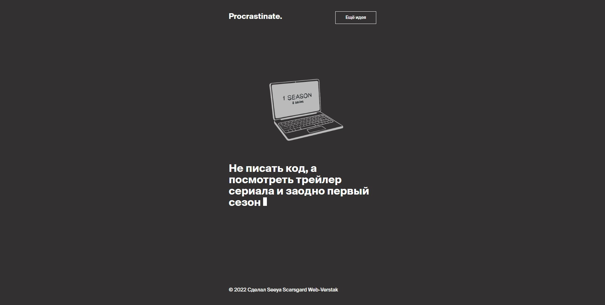
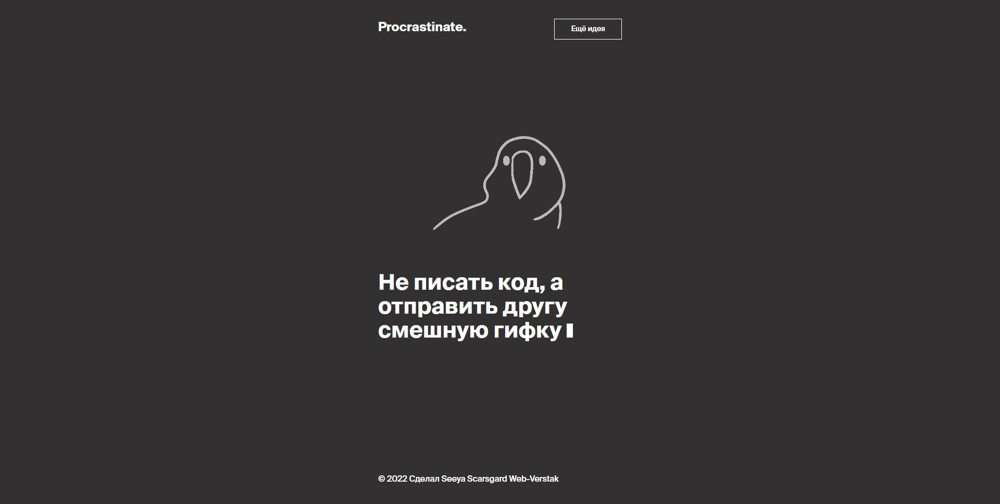

День седьмой,Интерактивная веб-страница, Яндекс Практикум
Третий проект мне понравился больше всего, в нём уже появился язык программирования, переменные, изменения данных и интерактив.
 Очень быстрыми темпами я прошёл вводный курс, мне он очень понравился и я решил, что если появится возможность(и деньги), то пройду полную версию курса. На тему курсов всегда много хороших и плохих отзывов и я думаю, что можно взять для себя нужное из любых источников, главное чтобы нравилась подача материала.